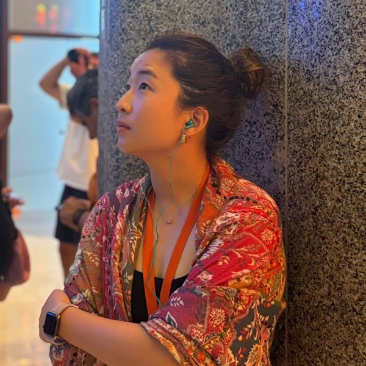

Los Angeles2024 – Present
PhD
USC Annenberg
I’m a third-year PhD student researching how AI and social media shape mental health stigma, support, and help-seeking among young people.
PhD Researcher · Participatory Research · Youth Mental Health · AI & Social Media
I research how AI and social media shape mental health stigma, support, and help-seeking among young people.

Los Angeles2024 – Present
USC Annenberg
I’m a third-year PhD student researching how AI and social media shape mental health stigma, support, and help-seeking among young people.
Check out this paper on the role social networks play in engagement with digital mental health among Asian American emerging adults.
Check out my latest preprint with interdisciplinary collaborators on how young people of color use and reimagine AI chatbots for mental health and well-being.
Check out this zine that a team of youth and I created following a photovoice project on Asian American youth mental health, identity, and culture.
My first-author paper on PrEP use among immigrant Latino men who have sex with men is out @ AIDS and Behavior.
I presented my work on news coverage of mpox and stigma at ICA @ Cape Town.
Check out this paper on how power is conceptualized and operationalized in EBI implementation.
I finished my PhD coursework at USC Annenberg!
I wrapped up a virtual photovoice project (first part of my dissertation) on Asian American youth mental health – grateful to USC Dornsife Equity Research Institute, Kaleigh Finnie Memorial Endowment Fund, USC Arts in Action, and USC Annenberg for your support!